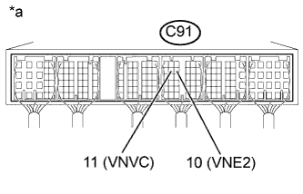

DTC P2564 Низкий уровень сигнала в цепи "A" датчика положения турбонагнетателя / объемного нагнетателя |
DTC P2565 Высокий уровень сигнала в цепи "A" датчика положения турбонагнетателя / объемного нагнетателя |
| Режим поездки при обнаружении DTC | Условие обнаружения DTC | Неисправный участок |
| Зажигание включено (IG) в течение 1 с | Напряжение на контакте VTI2 составляет не более 0,1 В в течение 2,1 с (логика диагностирования за 1 поездку). |
|
| Режим поездки при обнаружении DTC | Условие обнаружения DTC | Неисправный участок |
| Зажигание включено (IG) в течение 1 с | Напряжение на контакте VTI2 составляет не менее 4,9 В в течение 2,1 с (логика диагностирования за 1 поездку). |
|
| 1.ПРОВЕРЬТЕ, НЕ ВЫВОДЯТСЯ ЛИ ДРУГИЕ DTC (ПОМИМО P2564 И P2565) |
Подсоедините портативный диагностический прибор к DLC3.
Включите зажигание (IG) и портативный диагностический прибор.
Войдите в следующие меню: Powertrain / Engine and ECT / DTC.
Считайте коды DTC.
| Результат | Следующий шаг |
| P2564 и/или P2565 выводятся | А |
| P2564 и/или P2565 и другие DTC выводятся | B |
|
| ||||
| А | |
| 2.ПРОВЕРЬТЕ ЖГУТ ПРОВОДОВ И РАЗЪЕМ (ECM – ДАТЧИК ПОЛОЖЕНИЯ СОПЛОВОЙ ЛОПАТКИ) |
Отсоедините разъем датчика положения сопловой лопатки.
Отсоедините ECM.
Измерьте сопротивление в соответствии со значениями, приведенными в таблице ниже.
| Контакты для подключения диагностического прибора | Режим | Заданные условия |
| C87-1 (VTA1) - C91-6 (VNA) | Всегда | Менее 1 Ом |
| C87-2 (VNE2) - C91-10 (VNE2) | Всегда | Менее 1 Ом |
| C87-3 (VNVC) - C91-11 (VNVC) | Всегда | Менее 1 Ом |
| Контакты для подключения диагностического прибора | Режим | Заданные условия |
| C87-1 (VTA1) или C91-6 (VNA) - масса | Всегда | 10 кОм или более |
| C87-2 (VNE2) или C91-10 (VNE2) - масса | Всегда | 10 кОм или более |
| C87-3 (VNVC) или C91-11 (VNVC) - масса | Всегда | 10 кОм или более |
Подсоедините разъем датчика положения сопловых лопаток.
Подсоедините разъем ECM.
|
| ||||
| OK | |
| 3.ПРОВЕРЬТЕ ECM (НАПРЯЖЕНИЕ НА КОНТАКТЕ VNA) |
|  |
Измерьте напряжение в соответствии со значениями, приведенными в таблице.
| Контакты для подключения диагностического прибора | Положение переключателя | Заданные условия |
| C91-11 (VNVC) - C91-10 (VNE2) | Зажигание включено (IG) | 0,5-4,5 В |
| *a | Устройство с подсоединенным жгутом проводов (ECM) |
|
| ||||
| OK | |
| 4.ЗАМЕНИТЕ ECM |
Замените ECM (Нажмите здесь).
|
| ||||
| 5.ЗАМЕНИТЕ ТУРБОНАГНЕТАТЕЛЬ В СБОРЕ (ДАТЧИК ПОЛОЖЕНИЯ СОПЛОВОЙ ЛОПАТКИ) |
Замените турбонагнетатель в сборе (Нажмите здесь).
|
| ||||
| 6.ОТРЕМОНТИРУЙТЕ ИЛИ ЗАМЕНИТЕ ЖГУТ ПРОВОДОВ ИЛИ РАЗЪЕМ |
Отремонтируйте или замените жгут проводов или разъем.
| ДАЛЕЕ | |
| 7.ПРОВЕРЬТЕ, УСТРАНЕНА ЛИ ДОЛЖНЫМ ОБРАЗОМ НЕИСПРАВНОСТЬ |
Подсоедините портативный диагностический прибор к DLC3.
Удалите коды DTC (Нажмите здесь).
Выключите зажигание.
Выключите зажигание и оставьте автомобиль "как есть" на 15 с.
Включите зажигание (IG) на 1 с.
Убедитесь, что DTC не выводится снова.
Войдите в следующие меню: Powertrain / Engine and ECT / Utility / All Readiness.
Введите DTC P2564 и/или P2565.
Убедитесь, что для параметра STATUS (состояние) отображается значение NORMAL (нормальное). Если значением параметра STATUS является INCOMPLETE (не завершено) или UNKNOWN (нет данных), дайте двигателю поработать на холостом ходу.
| ДАЛЕЕ | ||
| ||